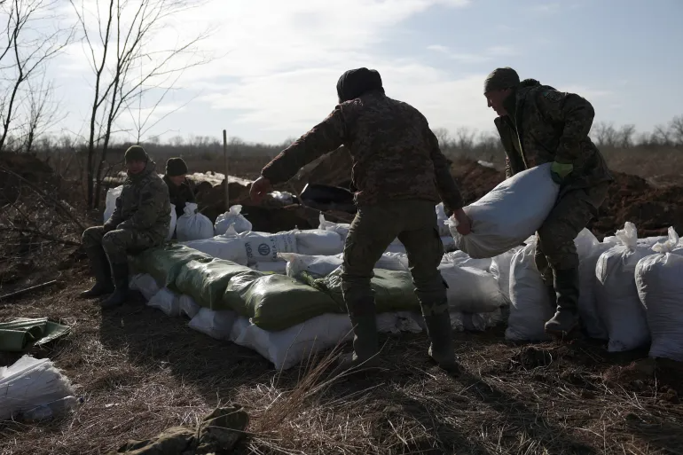
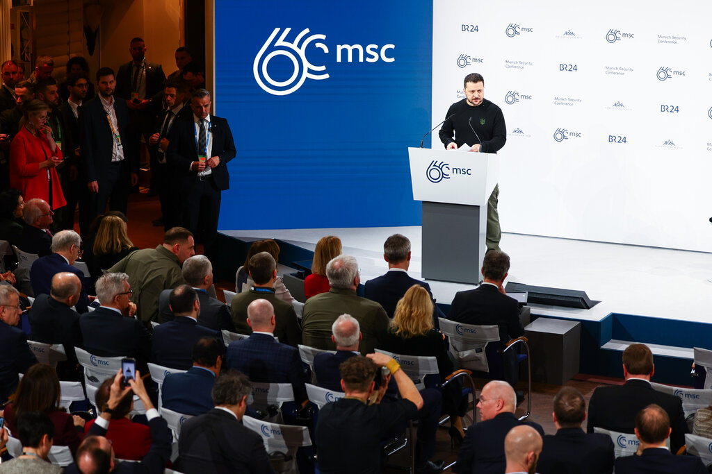
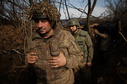

Russia claims full control of Avdiivka after Ukrainian retreat
Ukraine accuses Russia of killing unarmed prisoners after fall of Avdiivka
Security Service of Ukraine announces probe after footage of alleged executions circulates on Telegram messaging app.

Biden says he told Zelenskyy he’s ‘confident’ US will renew aid to Ukraine
US president warns of further losses of Ukrainian territory if Congress does not renew military aid.
A bitter and bloody war in Ukraine has devastated the country, further isolated Russia from the West
and fueled economic insecurity around the world.
'Scattered like snowdrops': Russian landmines decimate ranks of Ukrainian soldiers
Dictators Do Not Go on Vacation,’ Zelensky Warns Washington and Europe
President Volodymyr Zelensky pushed back against skepticism of a Ukraine victory, calling on world leaders not to ask when the war would end, but why Russia was still able to wage it.

Putin more upbeat amid stalled US aid and victory in Avdiivka, say western officials; EU approves
sanctions package targeting countries helping Moscow
Ukrainian forces have withdrawn from the eastern town of Avdiivka in Russia's biggest victory since
the fall of Bakhmut in May last year
Russia claims capture of Avdiivka after Ukraine withdraws from key city
President Putin hailed ‘important victory’ for Russia after Ukraine said it withdrew to
preserve its soldiers’ lives.
17 Feb 2024

Ukraine signs French security pact after similar agreement with Germany
Deal with France promises $3.23bn in military aid to Ukraine, while pact with Germany secures
$1.22bn support package.
16 Feb 2024

Zelenskyy seeks German, French support as Russia tightens noose on Avdiivka
Ukraine leader’s trip to Berlin, Paris comes as battle for eastern city, one of bloodiest in
near two-year war, rages.
16 Feb 2024

Russia-Ukraine war: List of key events, day 723
As the war enters is 723rd day, these are the main developments.
16 Feb 2024

Avdiivka, Longtime Stronghold for Ukraine, Falls to Russians
With Ukraine’s forces at risk of encirclement, the top military commander ordered a retreat. In
startlingly candid accounts, soldiers described disarray and despair.
18 Feb 2024

Navalny’s Death Raises Tensions Between U.S. and Russia
President Biden condemned “Putin and his thugs” for the Russian dissident’s demise, while European
allies urgently sought assurances that the United States would not abandon them.
18 Feb 2024